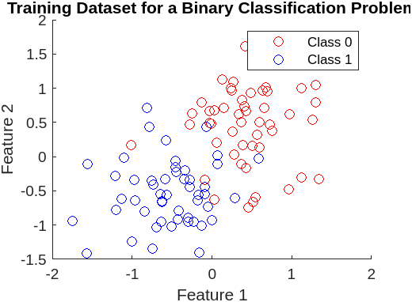
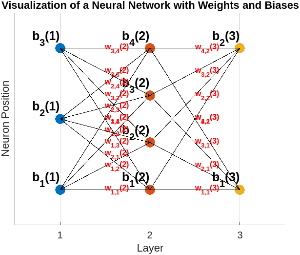
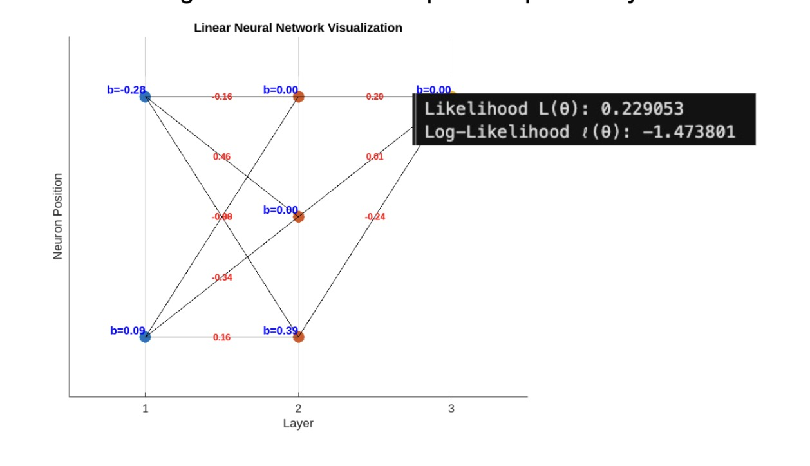
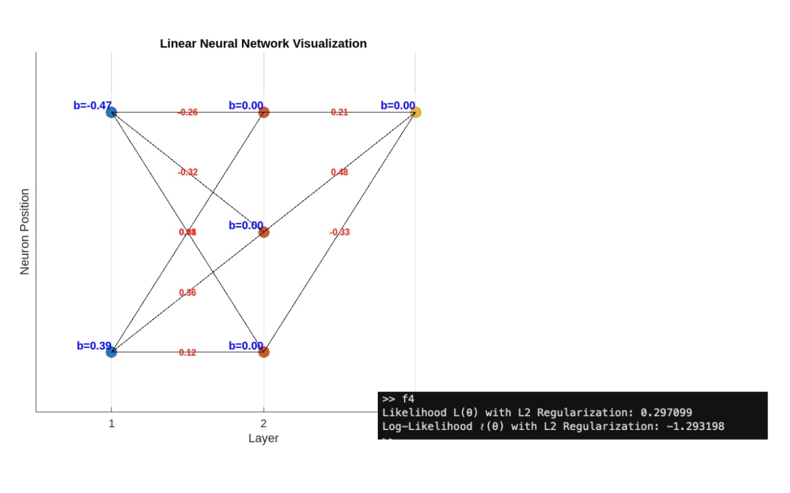
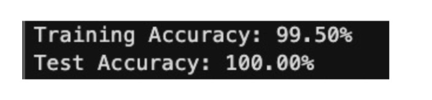

When studying transformers, it is easiest to start with the formulation of supervised learning. Let’s explore our first equation, the objective function, by explaining each variable first, examining what we want our equation to do, and then give the equation.
Training dataset: \( \mathcal{X} \)
The \(i\)-th training sample: \( x_i \)
The corresponding label: \( y_i \)
Seems pretty simple so far. We have a training dataset, and a sample with its corresponding label. We can describe the set of these labeled pairs as:
\[ \{ (x_i, y_i) \}_{i=1}^{n} = \mathcal{X} \]
Here’s a quick MATLAB plot of a simulated training dataset, where \( x_i = [\text{Feature}_1, \text{Feature}_2] \) and \( y_i \in \{0, 1\} \).

Deep learning incites us to find a set of parameters, \( \Theta \). The term parameter is daunting, but it’s really just a set of knobs or controls that adjust our predictions. These can also be known as our weights and biases. We’ll go more in depth into weights and biases in a bit, but for now let’s just examine their interplay with the set of parameters. Let’s introduce some more variables:
- The layer of the neural network: \( l \)
- The weight from neuron \(i\) in layer \( l-1 \) to neuron \( j \) in layer \( l \): \( w_{ij}^{(l)} \)
- The bias for neuron \( j \) in layer \( l \): \( b_j^{(l)} \)
Take careful note that:
\[ \Theta = \{ w_{ij}^{(l)}, b_j^{(l)} \mid \forall i, j, l \} \]
Here’s a MATLAB visualization of such a simplified neural network:

To optimize our set of parameters, \( \Theta \), we must first discuss the usage of a predefined loss function. We have countless candidates and the choice of a loss function should be highly dependent on the application at hand.
The simplest and perhaps most intuitive loss function is maximum likelihood estimation. I’m assuming you have a basic understanding of Bayesian statistics, but if not, I’ll try my best to explain. After all, “If you can’t explain it to a 6-year-old, you don’t understand it yourself.” I hope you’re a really smart 6-year-old.
I’ve already explained that \( \mathcal{X} \) is our dataset and \( \theta \) is the parameter set of weights and biases.
We want to find a likelihood function that measures the probability of classifying a label (i.e., \( y_i \in \{0, 1\} \)), given the training sample (i.e., \( x_i = [\text{Feature}_1, \text{Feature}_2] \), \( x_i \in \mathcal{X} \)) and set of parameters (i.e., \( \Theta = \{ w_{ij}^{(l)}, b_j^{(l)} \mid \forall i, j, l \} \)). In Bayesian probability, this is denoted as:
\[ L_i(\Theta) = p(y_i \mid x_i, \Theta) \]
Since we’re interested in taking into account the entire dataset, we say:
\[ L(\Theta) = \prod_{i=1}^{N} p(y_i \mid x_i, \Theta) \]
Due to properties of logarithms and the usage of a more stable sum, we take the log:
\[ l(\Theta) = \log L(\Theta) = \sum_{i=1}^{N} \log p(y_i \mid x_i, \Theta) \]
Thus, \( l(\Theta) \) measures how well the model parameters fit the training data. We use MATLAB to simulate a simple binary classification network with two input features and no activation function. We use a sigmoid function to compute the probability at the output layer:

This is not ideal. Don’t worry, we have a bunch of tools to increase likelihood and create a more robust model. One of them is regularization, of which we prevent the model from overfitting by penalizing the loss function based on the magnitude of model parameters. The two most popular kinds of regularization are L2 Regularization (Ridge), and L1 Regularization (Lasso).
L2 Regularization (Ridge) entails the weight decay of the square values of weights:
\[ L2(\Theta) = \frac{\lambda}{2} \|\Theta\|^2 \]
L1 Regularization (Lasso) adds a penalty of the sum of weight absolute values:
\[ L1(\Theta) = \lambda \|\Theta\| \]
With L2 Regularization, our objective function becomes:
\[ \sum_{i=1}^{N} \log p(y_i \mid x_i, \Theta) - \frac{\lambda}{2} \|\Theta\|^2 \]
Let’s implement this regularization term in our network:

That's a little better, so now let’s add an optimization method. Let’s start with gradient descent.
Recall that \( l(\Theta) \) measures how well the model parameters fit the training data. To find the most optimal parameters, we need to take the gradient of the log-likelihood function. We can think of this as rolling a pebble along the convex loss surface to attain a global minimum. First, we will multiply a term, \( \frac{1}{N} \), to average the loss over the training samples as an approximation of the expected risk. Thus,
\[ l(\Theta) = \frac{1}{N} \log L(\Theta) = \frac{1}{N} \sum_{i=1}^{N} \log p(y_i \mid x_i, \Theta) - \frac{\lambda}{2} \|\Theta\|^2 \]
When \( \alpha \) is the learning rate for parameter update, we can describe our update:
\[ \Theta_{new} = \Theta_{old} - \alpha \nabla_{\Theta} l(\Theta) = \Theta_{old} - \nabla_{\Theta} \left( \frac{1}{N} \sum_{i=1}^{N} \log p(y_i \mid x_i, \Theta) - \frac{\lambda}{2} \|\Theta\|^2 \right) \]
Given the nature of gradients, we can rewrite our parameter update rule as:
\[ \Theta_{new} = \Theta_{old} - \nabla_{\Theta} \left( \frac{1}{N} \sum_{i=1}^{N} \log p(y_i \mid x_i, \Theta) + \nabla_{\Theta} \frac{\lambda}{2} \|\Theta\|^2 \right) \]
Let’s also introduce a nonlinearity activation from the hidden layer. For its simplicity, I’ll choose the sigmoid:
\[ \sigma(x) = \frac{1}{1+e^{-x}} \]
When we implement these two ideas in our network, our generalization skyrockets.
At this point, likelihood isn’t necessarily the best way to determine the strength of a model. We’re going to create a training and test split for our dataset. This will tell us the correctness of our binary classification for a real task. We choose a 60:40 split. Without good data, a neural network is worthless. Let’s add a bit more data around our two centers for binary classification.

That’s really good. By using a simple averaged Bayesian log-likelihood as our loss function, L2 ridge regulation to penalize our loss function, and gradient descent to optimize our weights and biases, our network has learned to classify a synthetic dataset.
For MATLAB code, please reach out: